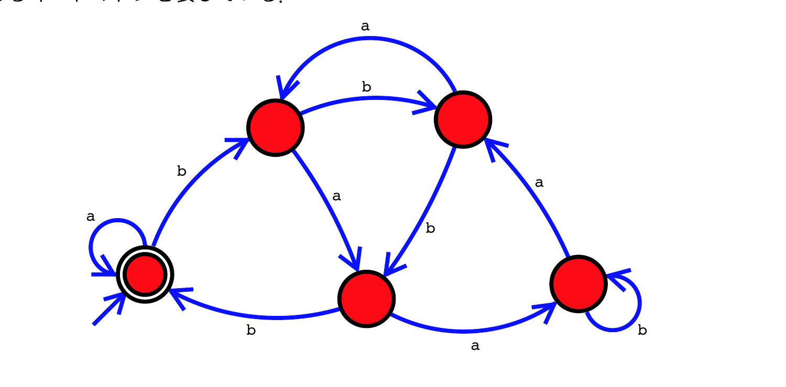

田中哲朗クラス（理科一類5,10,14,35組）
以下の図はあるオートマトンを表している。

チェック表を埋め、説明(f)を埋めよ。
| 入力 | 終了状態 |
|---|---|
| 無し | Yes |
| b | No |
| aa | Yes |
| baaa | (a) |
| bab | (b) |
| baab | (c) |
| baba | (d) |
| bbaab | (e) |
「aとbだけからなる入力を、「a」が0、「b」が1に対応した2進数だと読みかえる。このとき、入力が(f)の時に終了状態となるオートマトン。」
図の5状態を左からS（開始・受理、2重丸、aの自己ループ）,A,B,C,D（bの自己ループ）とし、遷移をたどると次のようになる：S（a→S、b→A）、A（a→C、b→B）、B（a→A、b→C）、C（a→D、b→S）、D（a→B、b→D）。
各状態にmod 5の剰余を対応させると S=0（受理）,A=1,B=3,C=2,D=4 となり、これは遷移規則$新状態=(2\times旧状態+ビット)\bmod5$（aを0、bを1とする）に完全に一致する。すなわちこのオートマトンは、「aを0、bを1とみなした2進数を上位桁から読み、5で割った余りを状態として保持する」機械であり、余り0（＝5の倍数）で終了したときにだけ受理する。
与えられた例で検算：無し（値0、余り0）→S→Yes、b（値1、余り1）→A→No、aa（値0、余り0）→S→Yes、いずれも整合する。
(f) 与えられた入力を2進数として読んだ値が5の倍数（5で割り切れる数）である。
暗証番号「abc」または「acaba」が入力された時に解錠する（終了状態になる）電子錠をオートマトンとしてモデル化することを試みる。途中で間違った暗証番号を押しても、後からどちらかの暗証番号を入力すれば解錠するものとする。また、一度解錠した後は何を入力し続けても解錠状態となる。
次のチェック表の (g)〜(j) を埋めて完成させ、さらに、この条件を満たすオートマトンを作成して図にしなさい。
| 入力 | 終了状態 |
|---|---|
| 無し | No |
| acabc | Yes |
| acaba | Yes |
| abaca | (g) |
| ababa | (h) |
| aabc | (i) |
| acababc | (j) |
"abc"と"acaba"という2つのパターンの「接頭辞の一致状況」を状態とする状態機械（Aho-Corasick型の遷移構成）を作る。状態は $S_0=\varepsilon$（無一致）、$S_1=$「a」、$S_2=$「ab」、$S_3=$「ac」、$S_4=$「aca」、$S_5=$「acab」、そして完成状態 $K_1=$「abc」、$K_2=$「acaba」の8状態。
各状態からの遷移は、「その状態が表す文字列の末尾に新しい文字を加えたとき、なお両パターンのどちらかの接頭辞として一致し続けられる最長の部分」へ移る（失敗時に戻る先を辿るfail関数の考え方）：
まず与えられた2例で検算する。acabc：$S_0\xrightarrow{a}S_1\xrightarrow{c}S_3\xrightarrow{a}S_4\xrightarrow{b}S_5\xrightarrow{c}K_1$（受理）✓。acaba：$S_0\xrightarrow{a}S_1\xrightarrow{c}S_3\xrightarrow{a}S_4\xrightarrow{b}S_5\xrightarrow{a}K_2$（受理）✓。
(1)の「2進数を上位桁から読んで5で割った余りを状態に保つ」しくみと、(2)の「複数の暗証番号の接頭辞一致状況を状態に保つ」しくみは、他の年度にも繰り返し出題される定番テーマである。前者は「$新状態=(2\times旧状態+新しいビット)\bmod n$」という漸化式に従う有限状態機械で、$n$を変えれば任意の$n$の倍数判定に応用できる。後者はAho-Corasick法として知られる複数パターン同時検索アルゴリズムの考え方そのもので、「一致が途切れたときにどこまで巻き戻るか」を表すfail関数を状態遷移としてあらかじめ埋め込んでおくことで、入力を1回なぞるだけで全パターンの一致・不一致を判定できる。
ICトレーナーでXORのICが壊れていたため、他の回路でXORを実現したい。XORは、入力xとyが異なる時に1、等しい時に0を出力する論理関数である。
XORの真理値表を書け。
定義通り、xとyが異なるときにのみ出力zが1になる。
| x | y | z |
|---|---|---|
| 0 | 0 | 0 |
| 0 | 1 | 1 |
| 1 | 0 | 1 |
| 1 | 1 | 0 |
XORをAND,OR,NOTの3種類だけを使い、なるべく少ないゲート数で実現する回路をMIL記法で書け。
真理値表で$z=1$となるのは$(x,y)=(0,1),(1,0)$の2行だから、主加法標準形は$z=\bar x y+x\bar y$である。この式に共通項はこれ以上まとめられないので、$\bar x,\bar y$を作るNOT2個、$x\bar y$と$\bar x y$を作るAND2個、それらのORを取る1個で構成する。
検算：$(x,y)=(1,0)$のとき$n_1=0,n_2=1,n_3=\text{AND}(1,1)=1,n_4=\text{AND}(0,0)=0,z=\text{OR}(1,0)=1$ ✓。$(x,y)=(1,1)$のとき$n_1=0,n_2=0,n_3=\text{AND}(1,0)=0,n_4=\text{AND}(0,1)=0,z=\text{OR}(0,0)=0$ ✓。
XORをNANDだけを使い、なるべく少ないゲート数で実現する回路をMIL記法で書け。
NANDのみによるXORの標準的な最小構成は次の4ゲートである。
全4通りの入力で検算する：
すべて真理値表と一致する。
(2)のAND/OR/NOT構成は5ゲート、(3)のNANDのみの構成は4ゲートであり、素子の種類を1つに絞った方がかえってゲート数が少なくなることがある。実際のIC製造では、異なる種類の素子を少数ずつ作るより、同一種類の素子（NAND）だけを大量生産する方が製造コストの面で有利なため、任意の論理回路をNANDだけで組み上げる設計手法（NAND-NAND論理）がしばしば用いられる。これは、NANDが「関数的完全性」を持つ素子——すなわちNANDだけの組合せでAND・OR・NOTを含むあらゆる論理関数を表現できる——という性質に基づいている。